Showpao
Event Branding & Visual Identity
The Introduction
SHOWPAO is an annual Filipino cultural festival presented by the Filipino Organization of Concordia University Students (FOCUS), celebrating the diversity of the Filipino-Montreal community through creative and cultural talent. A wordplay on siopao — the Philippine take on the Cantonese steamed bun char siu bao — the festival brings together entrepreneurs, local organisations, and the broader community to celebrate Filipino culture past, present, and future.
Showpao Feature Video
Tools
Illustrator, Photoshop, InDesign, Premiere Pro
Deliverables
Event Brand Identity, Print & Digital Collateral, Subtitles
Keywords
Celebration, Warmth, Nostalgia
Year
2022 - 2023
The Challenge
Previous iterations of SHOWPAO a decade earlier were simple talent showcases with no defining visual identity. As the festival was being revived and expanded, first as a documentary during Covid-19 restrictions, then as a full two-day live event, it needed a brand that could carry the weight of the occasion: honouring Filipino history, reflecting the Montreal community, and exciting an audience across generations.
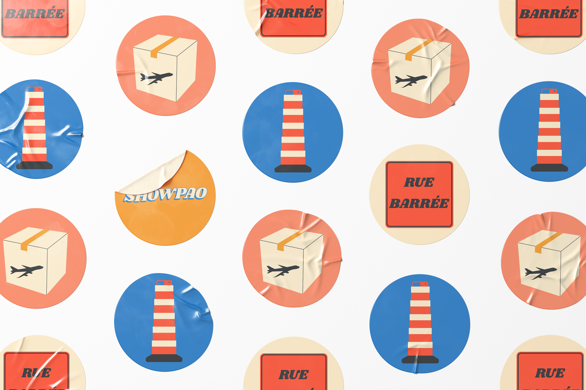
The Process
As former VP Design of the student organisation, I was brought in to build a distinct brand for the festival from the ground up. After exploring several thematic directions, the 1970s emerged as the clear choice, not just for its distinctive design era, but for its historical resonance. The 70s marked a significant wave of Filipino migration to Canada, making it a decade that spoke directly to the community the festival was celebrating.
The warm 70s color palette was inspired by the seat colors in the Plamondon metro, its location in a neighborhood were a lot of Filipinos in the city reside. For typography, I looked to Philippine graphic design tradition, known for its bold and expressive character. The logo was built around Shrikhand: a big, unapologetic all-caps typeface set with a wavy baseline, referencing the expressive lettering still visible on Filipino signage and advertisements today. It captures a spirit as vibrant as the culture it represents.
Working closely with the organisation's Marketing Director, we mapped out all deliverables needed across both years of the event and applied the identity consistently, from print and digital collateral to the documentary itself.
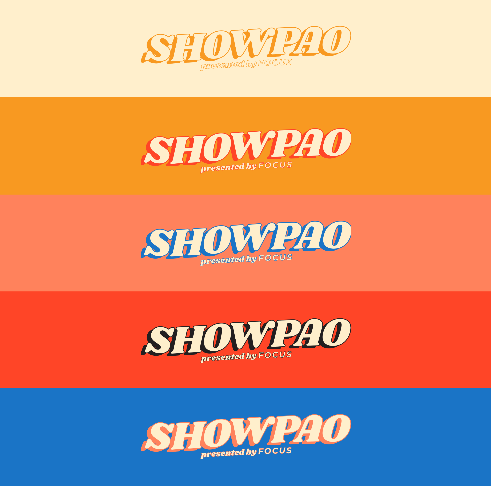
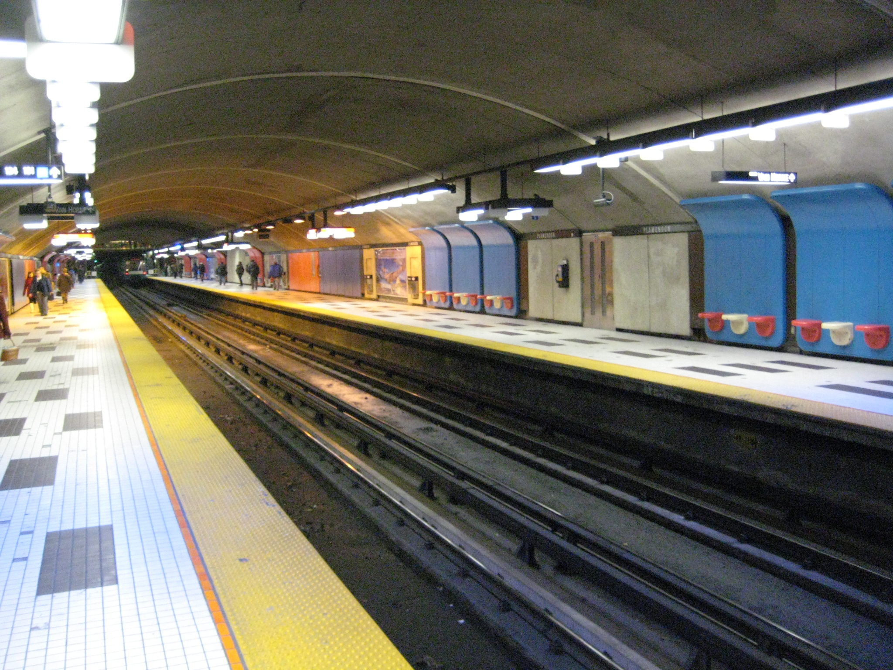
Photo Credit: Ruixin Tian
Plamondon Metro Station
The Solution
The resulting identity is warm, celebratory, and rooted in real history. In 2022, the brand anchored a documentary featuring a multigenerational cast produced under Covid-19 restrictions. In 2023, it carried through a full two-day live event that included the documentary screening and a talent showcase.
This project was managed through Wabala Studio, meaning I never interfaced directly with the client. Mockups and brand presentations became the primary communication tool, a constraint that sharpened how clearly I had to articulate design decisions on the page rather than in conversation.
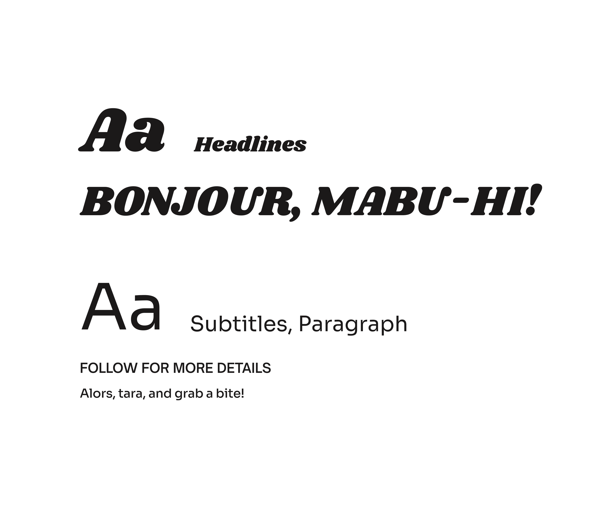
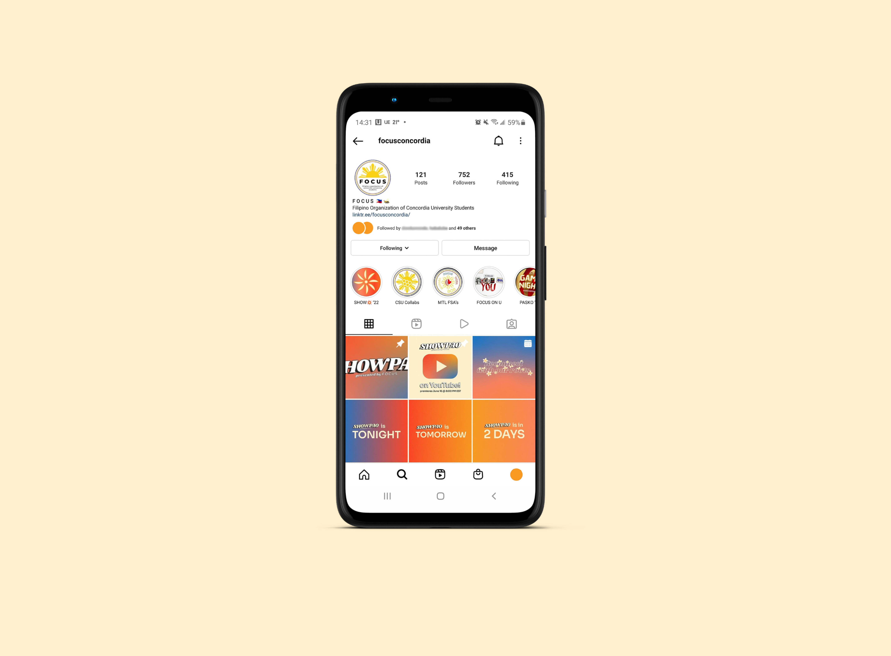
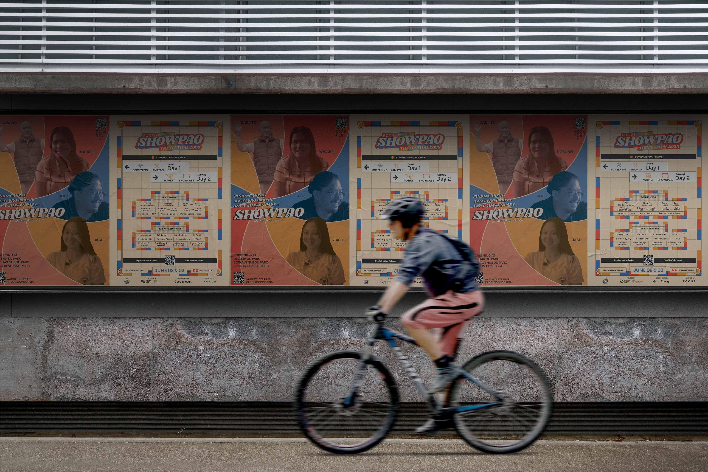
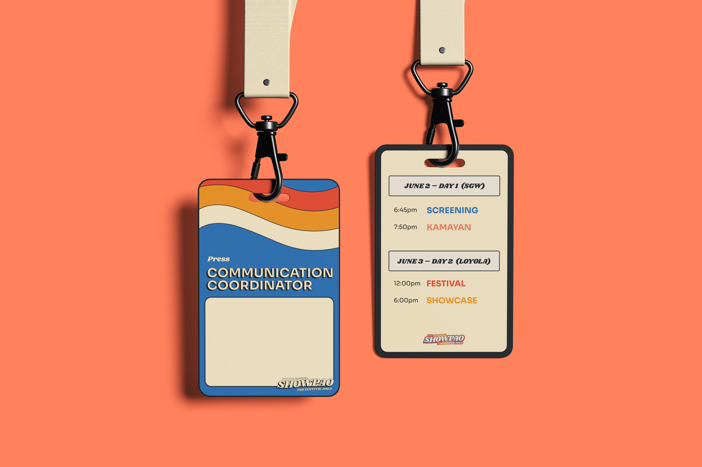
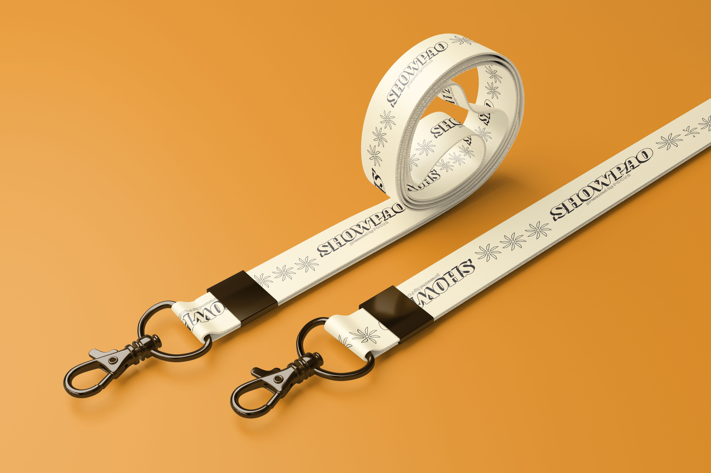
The Reflection
This project was very personal. Designing for your own community carries a different kind of responsibility: the history has to be right, the feeling has to be earned, and the visual choices have to resonate with people who lived it. The Plamondon metro seats, the 70s typography, the Filipino advertising vernacular — none of it was arbitrary. Every decision was a nod to something real. The resulting graphics displayed an event that honored the Filipino community of the past, present, and future.
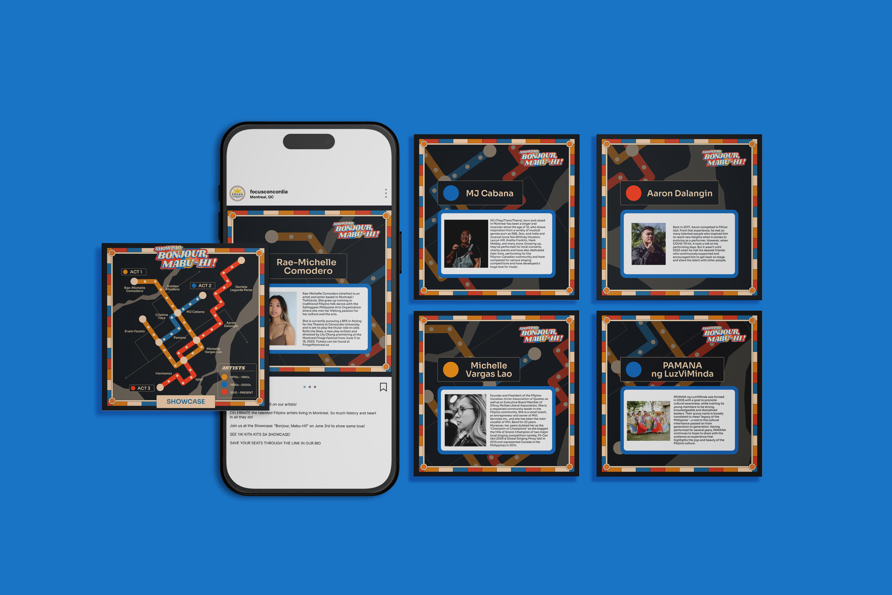
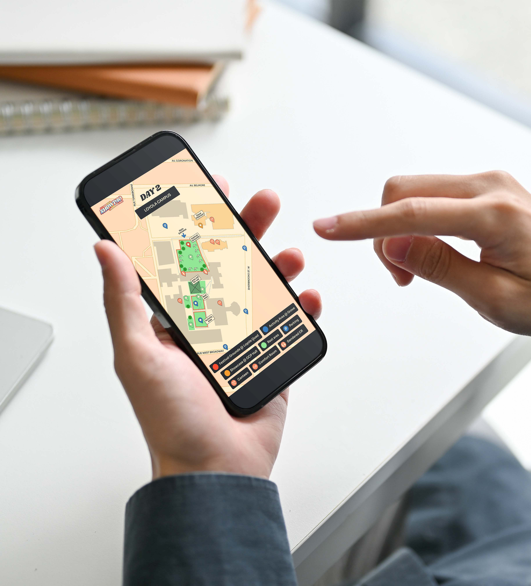
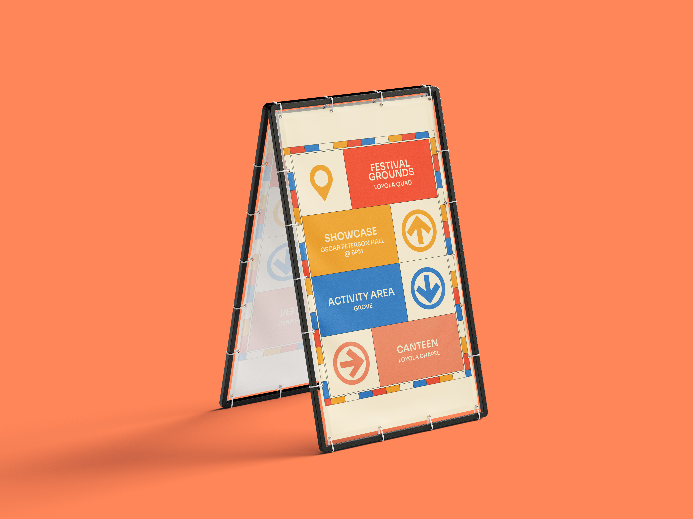